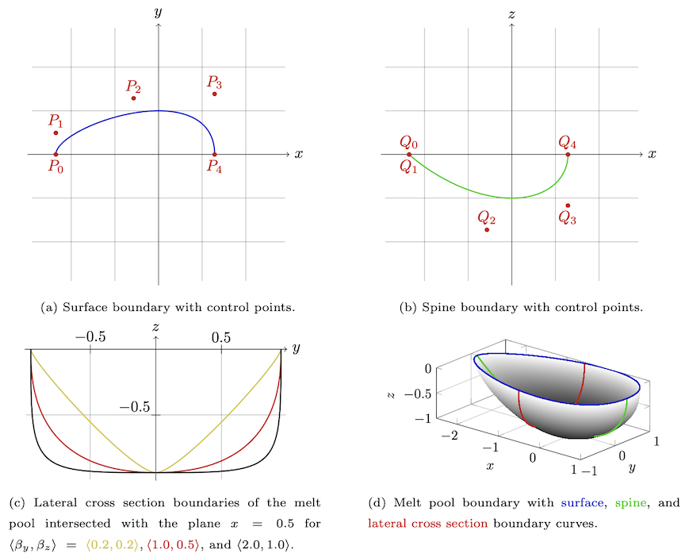
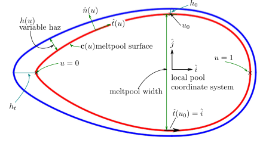
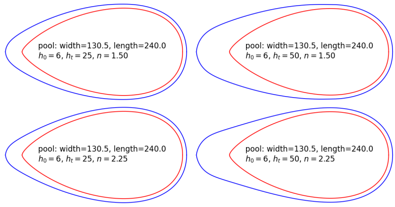

Syntax:
app_style potts/am/bezier nspins width depth h0 ht n
Examples:
app_style potts/am/bezier 250000 130 65 5
Description:
This is an on-lattice application derived from the app_style potts/neighonly application that simulates the rastering of a molten pool and its accompanying heat-affected zone (HAZ) through a domain. Rastering is achieved through the specification of layer-by-layer patterns, which can be combined into an overall pattern specifying the translation of the molten zone through the entire simulation domain. The application allows for arbitrary numbers of paths in each layer and an arbitrary number of layers in each pattern. Thus, the user can construct any scan strategy desired by specifying individual layer patterns and how these patterns should be repeated. Simulating arbitrary paths and layers is often used in conjunction with the Stitch IO via the set_stitch and dump stitch commands.
The app requires specification of melt pool dimensions width,depth, and parameters describing the surrounding heat affected zone h0,ht,n. The model also requires specification of the melt pool surface via the potts/am/bezier control_points command. Whereas app_am ellipsoid uses two ellipsoids to define the moving melt pool and heat effected zone, here, the molten pool is defined by two fourth order Bezier curves: 1) top surface curve; 2) spine curve. The two curves are combined to form a 3D surface representing the interface between liquid and solidified material. The shape of the pool is defined by user input control points for the two curves and may be obtained from laboratory images or through process simulation or some other means.
Degree four Bezier curves require a total of five control points. However, symmetry of the melt pool across xz-plane and the bounding top surface plane z=0 reduce the number of required inputs. Control points for the top surface curve are input only for half the melt pool on account of symmetry; because the front and tail of pool start at y=0 only three y components of the top curve are required while the other two components are implicitly set to 0 by the app. Similarly, because the spine curve begins and ends at the top surface z=0 only three components of z control points are required. Both the top surface curve and spine curve use the same x component values and all five are required inputs. Melt pool width and depth is explicitly set according to user inputs width, depth whereas melt pool length is implicitly defined by the ratio width/length according to the input top surface curve control points. The x,y components of the top curve control points are scaled to achieve the user input pool width. Similarly, spine curve control point components x,z are scaled to specified melt pool depth. However, the final set of x components used for both the top surface curve and spine curve are values obtained from the width scaling operation.
The following command defined by this application must be used to specify the bezier melt pool surface geometry as described above.
| potts/am/bezier | Specifies control points and convexity of surface. |
During the AM process, polycrystalline grains nucleate and evolve within the haz. This makes accurately capturing the haz shape important to microstructure prediction. In this model, three parameters h0,ht,n are used to describe the shape and extent of the haz. These parameters describe the variable heat affected zone that depends upon location relative to the pool surface, shown in red below. The limit of the haz is shown by the blue curve. h0 and ht are length scale parameters and n is a dimensionless shape factor. Here, h0 represents the size of the haz at the maximum pool width and depth, while ht indicates the length of the haz at the top surface trailing edge. Together, these parameters define a position-sensitive and variable haz.
Parameters h0,ht are input in spparks lattice units of length and characterize the heat-affected zone at the edge and trailing edge of the pool. The heat-affected zone is always present, which means that h0 is always greater than zero. Additionally, ht should be greater than or equal to h0.
The dimensionless parameter n describes the haz shape. The value for n should be greater than 3/2; a wide range of possible haz zone shapes are possible but care should be taken. A python script is given in the examples directory and was used to make the plots below for a fixed set of control points and varying set of haz parameters. With fixed control points, melt pool dimensions are the same. Different values for the variable haz parameters show changes in the resulting heat affected zone.
Some combination of the following additional commands are typically used by this application to specify a raster pattern. A layer must be defined by using am cartesian_layer or am path_layer. A layer requires one to many am path commands or at least one am pass command.
The examples/potts_am_bezier directory has input files which illustrate use of some of these commands. However these commands are not unique to this app and other examples within the examples directory may also further illustrate.
This application is only compatible with square and square cubic lattices.
This application can only be evolved by a rejection KMC (rKMC) algorithm. See the sweep command for more details.
Related commands:
app_style am/ellipsoid, app_style potts/weld, app_style potts/weld/jom
Default: none
Details of the melt pool representation used in this app are described in A Bézier curve informed melt pool geometry for modeling additive manufacturing microstructures, Jeremy E Trageser, John A Mitchell, Kyle L Johnson, Theron M Rodgers, Computer Methods in Applied Mechanics and Engineering, Volume 415, 1 October 2023 116208.